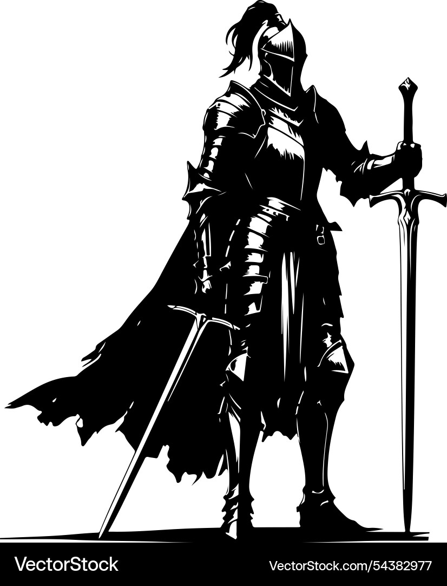

Kalis was one of the most renowned fighters of a bygone era. Proficient in all common weapons and quite a few exotic ones, his primary weapon is the maul, a bludgeoning weapon most effective against heavily armored targets.
In the attack on Agartha, Kalis was grievously wounded defending the door to the royal chambers, though he eventually hunted down all the rebels in the castle. Now, he stalks the halls of the Citadel,
Kalis' mere presence in the Citadel maintains what little order is still left among those loyal to the Great Devourers. With him dead, random encounters will no longer be weighted. This means that the party is as likely to face a deadly encounter as they are a weak one.